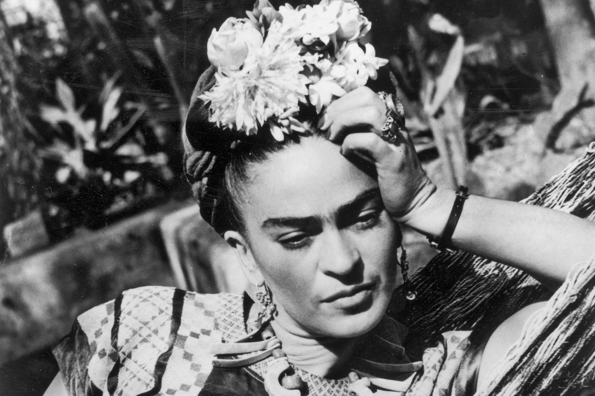

Frida Kahlo Calderon is born as third daughter of Matilde Calderon de Kahlo, Mexican, and Wilhelm Kahlo, German, in Coyoacan, a suburb of Mexico City.
Frida Kahlo
July 6 1907 - July 13 1954
Meet Frida
Mexican artist Frida Kahlo is remembered for her self-portraits, pain and passion, and bold, vibrant colors. She is celebrated in Mexico for her attention to Mexican and indigenous culture and by feminists for her depiction of the female experience and form.
Life experience is a common theme in Kahlo’s approximately 200 paintings, sketches and drawings. Her physical and emotional pain are depicted starkly on canvases, as is her turbulent relationship with her husband, fellow artist Diego Rivera, who she married twice. Of her 143 paintings, 55 are self-portraits.

Timeline

Frida Kahlo Born

Traffic Accident
After a day of classes, Kahlo and her friend boarded a bus and minutes after they sat down, the bus turned a corner and slammed into an electric trolley car traveling at full speed. She suffered serious internal injuries as a long metal rod tore through her midsection. They were so severe that she had to be encased in a full-body plaster cast.
Married Diego Rivera
Frida Kahlo Calderon is born as third daughter of Matilde Calderon de Kahlo, Mexican, and Wilhelm Kahlo, German, in Coyoacan, a suburb of Mexico City

First Solo Exhibition
Frida Kahlo Calderon is born as third daughter of Matilde Calderon de Kahlo, Mexican, and Wilhelm Kahlo, German, in Coyoacan, a suburb of Mexico City
Learn about the life and art of Mexican surrealist painter Frida Kahlo, who explored disability, relationships and Mexican culture in her work.
Over the course of her life, she would establish herself as the creator and muse behind extraordinary pieces of art. Iseult Gillespie dives into the life and work of Frida Kahlo.
Collections

Flower of life

Girl with Death mask

The Deceased Dimas